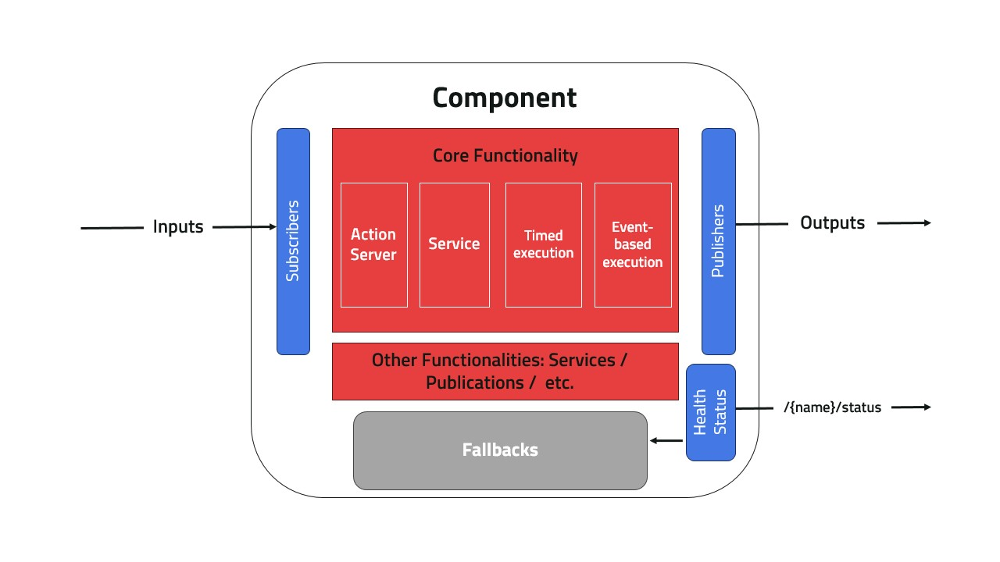

Components#
A Component is the main execution unit in Kompass, every Component is equivalent to a ROS2 Lifecycle Node comprising of:
{kind=link}

Component Structure#
Each Component must serve one main functionality which can be executed in different modes or RunType (Example below), additionally the Component can offer any number of additional services. Available RunType are:
RunType (str) |
RunType (enum) |
Description |
|---|---|---|
Timed |
RuntType.TIMED |
Executes main functionality in a timed loop while active |
Event |
RuntType.EVENT |
Executes main functionality based on a trigger topic/event |
Server |
RuntType.SERVER |
Executes main functionality based on a ROS2 service request from a client |
ActionServer |
RuntType.ACTIONSERVER |
Executes main functionality based on a ROS2 action server request from a client |
The run type can be configured using ‘run_type’ attribute in the component config class, or directly using ‘run_type’ property:
from kompass.config import ComponentRunType, ComponentConfig
from kompass.components import Component
config = ComponentConfig(run_type=ComponentRunType.EVENT)
# Can directly pass a string
config = ComponentConfig(run_type="Event")
# Can set from Component
comp = Component(component_name='test')
comp.run_type = "Server" # or ComponentRunType.SERVER
Tip
All the functionalities implemented in ROS2 nodes can be found in the Component.
Inputs and Outputs#
Components in Kompass are defined to accept only restricted types of inputs/outputs to help lock the functionality of a specific Component implementation. Each input/output is associated with a unique keyword name and is set to accept one or many types of ROS2 message types. Additionally, the input/output keyword in the Component can define a category of Topics rather than a single one. To see an example of this check the DriveManager Component. In this component the input sensor_data defines any proximity sensor input (LiDAR, Radar, etc.) and can optionally take up to 10 Topics of such types to fuse it internally during execution.
Configuring an input/output of a Component is very straightforward and can be done in one line in your Python script. Below is an example for configuring the previously mentioned DriveManager:
from kompass.components import DriveManager
driver = DriveManager(component_name="driver")
# Configure an input
driver.inputs(sensor_data=[Topic(name='/scan', msg_type='LaserScan'),
Topics(name='radar_data', msg_type='Float64')])
# Configure an output
driver.outputs(emergency_stop=Topic(name='alarm', msg_type='Bool'))
See also
Check Inputs/Outputs in the advanced section to learn how you can configure the allowed inputs/outputs for your custom component.
Health Status#
Each Components comes with an associated health status to express the well or mal-function of the component. Health status is always available internally and can in the component by associating failure status to a Fallback behavior allowing the component to self-recover. Component also have the option to declare the status back to the system by publishing on a Topic. This can be configured in the ComponentConfig class.
Learn more on using health status in the component here.
Fallbacks#
Component fallbacks are aet of techniques to be applied internally in case of failure to allow self-recovery within the component. Check the fallbacks dedicated page to learn how to use and configure your own fallbacks.